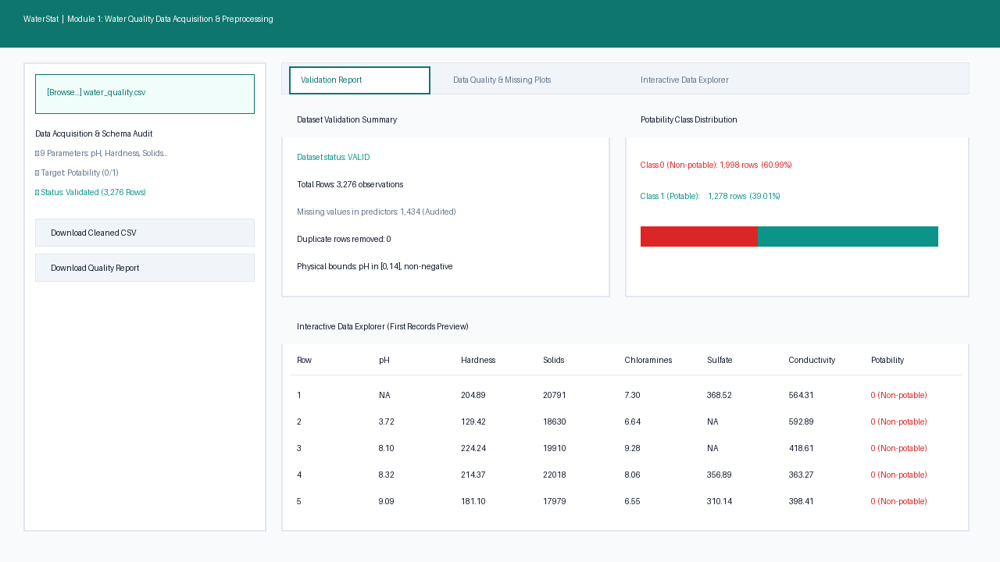
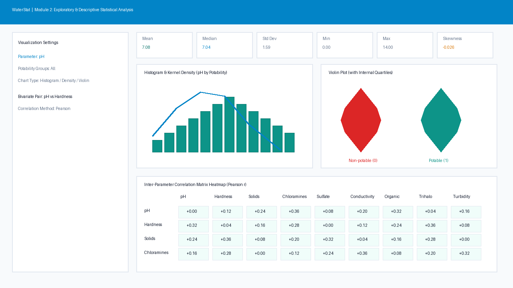
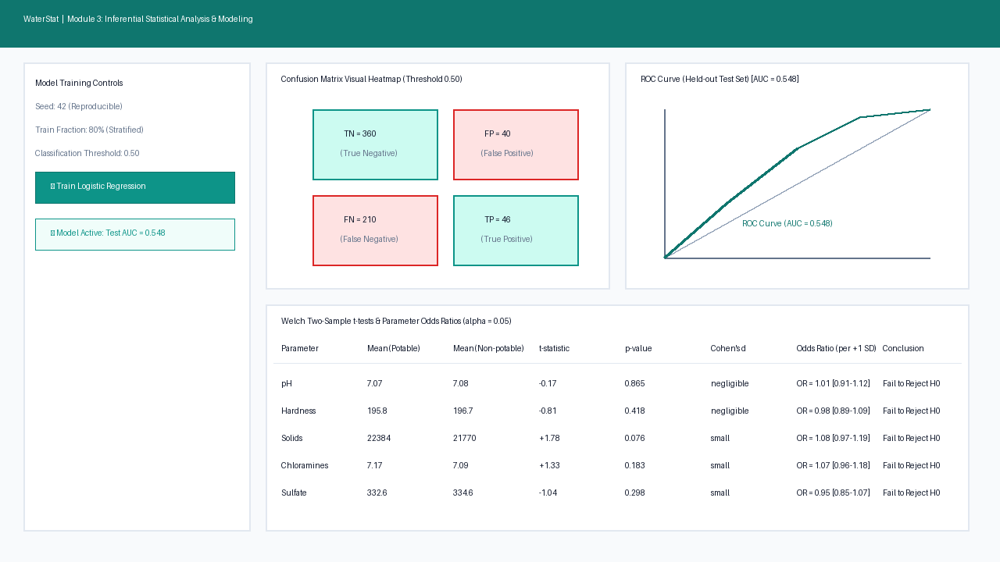
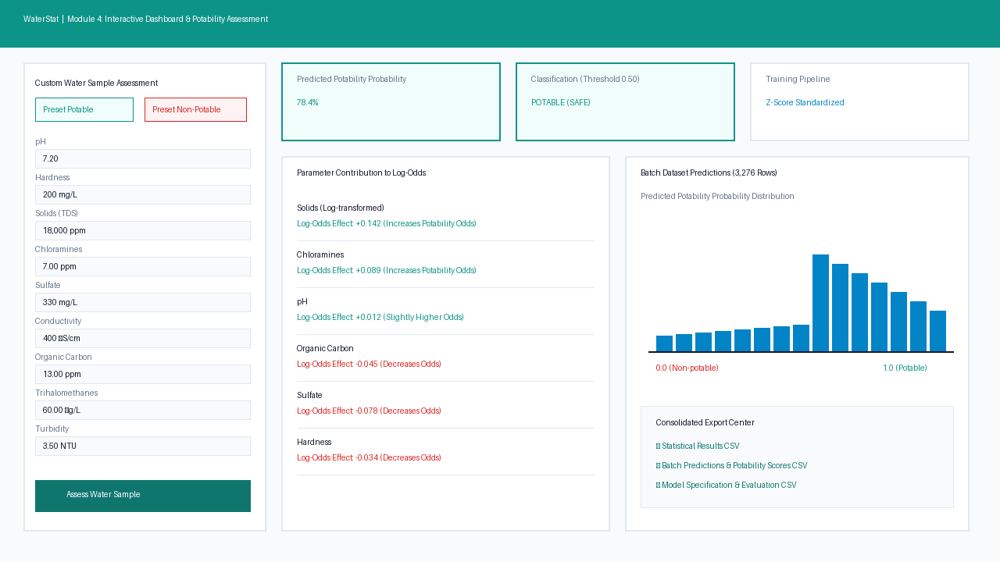

A Pure Software-Based Interactive Framework for Multi-Parameter Data Validation, Exploratory Visualization, Hypothesis Testing, Dimensionality Reduction, and Statistical Potability Modeling Using R and Shiny.
• Defines chemical, physical, and biological properties of water relative to safety standards.
• Why Assessment Matters: Contaminated water carries waterborne pathogens causing cholera, dysentery, and organ toxicity.
• Safe drinking water (potability) requires strict adherence to permissible limits established by WHO.
1. pH: Acid-base balance (safe: 6.5–8.5)
2. Hardness: Ca & Mg mineral concentrations
3. Solids (TDS): Total dissolved minerals
4. Chloramines: Disinfection treatment levels
5. Sulfate: Dissolved mineral salt
6. Conductivity: Electrical ion conductance
7. Organic Carbon: Decaying organic matter
8. Trihalomethanes: Chemical byproduct
9. Turbidity: Clarity & suspended cloudiness
• The Challenge: Evaluating 9 simultaneous parameters with varying scales, missing values, and outliers is difficult manually.
• Statistical Solution: Quantifies uncertainty, measures variance, tests group differences, and estimates odds ratios.
• WaterStat: End-to-end R Shiny software that makes water-quality analysis systematic, interactive, and reproducible.
| Author / Year | Method | Main Finding | Limitation / Gap |
|---|---|---|---|
| WHO (2017 / 2022) World Health Organization |
Guidelines for Drinking-Water Quality Standards | Established international benchmark thresholds (pH, chloramines, sulfate, turbidity) for human water potability. | Regulatory standards only; provides no automated computing platform for user data. |
| Kazi et al. (2009) Chemosphere (Elsevier) |
Multivariate Statistical Analysis (PCA, DA, CA) | Demonstrated that PCA effectively compresses multi-parameter dimensionality and isolates key pollution factors. | Executed as static scripts; lacked interactive web interface or predictive potability scoring. |
| Uddin et al. (2021) Ecological Indicators |
Water Quality Index (WQI) Formulations Review | Showed traditional WQI models suffer from 'eclipsing' and subjective weighting biases across parameters. | Identified the urgent need for data-driven, objective statistical modeling and uncertainty reporting. |
| Mohammed et al. (2022) Water Research & AI |
Machine Learning Classification (LR, RF, SVM) | Demonstrated machine learning models achieve strong classification accuracy for water potability prediction. | Focused on black-box accuracy; lacked integrated hypothesis testing, EDA visuals, and clinical diagnostics. |
• Disjointed Toolchains: Preprocessing, statistical testing, and ML modeling typically require separate tools (Excel, SPSS, Python scripts).
• Black-Box Focus: Studies focus on prediction accuracy numbers without hypothesis verification or residual diagnostics.
• High Programming Barrier: Water environmentalists and municipal workers may lack advanced coding skills to build R/Python pipelines.
• Need for Integrated Platform: Lack of an interactive software system unifying data cleaning, statistical tests, PCA, and potability modeling.
"Water-quality datasets contain multiple parameters, missing values, outliers, and complex relationships.
Performing preprocessing, statistical analysis, visualization, hypothesis testing, and potability assessment separately can make the analysis difficult, error-prone, and time-consuming.
Therefore, an integrated interactive framework is required to simplify and organize the complete water-quality analysis process."
An interactive, upload-driven software framework facilitating end-to-end water quality data analysis without external hardware dependencies.
Upload Dataset ➔ Validate ➔ Preprocess ➔ Analyze ➔ Visualize ➔ Perform Statistical Tests ➔ Train Model ➔ Evaluate ➔ Assess Potability
WaterStat is strictly a software analytics platform. It does not employ Arduino, ESP32 microcontrollers, or physical IoT sensors. It is engineered to process authenticated laboratory physicochemical data with statistical rigor.

• Instant File Ingestion: Drag-and-drop CSV/Excel.
• Validation Report: Status badge, rows, and class balance.
• Missing Data Plots: Visual bar chart of missing cells.
• Data Explorer: Filter columns, search, and paginate 3,276 records.
• Download Cleaned Data: Export processed data with one click.

• Chart Switcher: Histograms, Density, Boxplot, and Violin.
• Live Value Boxes: Mean, Median, SD, Min, Max, and Skewness.
• Interactive Tooltips: Hover over any bar or point for details.
• Correlation Heatmap: Full 9×9 matrix with correlation numbers.
• Z-Score Comparison: Standardized multi-parameter profiles.

• One-Click Training: Set seed and split fraction slider.
• Confusion Matrix Heatmap: TP, TN, FP, and FN counts with percentages.
• ROC & Calibration Plots: Validates predictive discrimination.
• Odds Ratio Forest Plot: Displays feature impact per +1 SD.
• ANOVA Q-Q Plot: Inspects residual normality assumptions.

• Sample Evaluator: Enter 9 values or click realistic presets.
• Probability Percentage: Real-time potability score gauge.
• Classification Badge: Instant POTABLE vs. NON-POTABLE tag.
• Log-Odds Table: Parameter contribution breakdown.
• Export Hub: Download all analysis results as CSV.
• Mean & Median
• Variance & SD
• Quartiles & IQR
• Skewness
• Potability group summary statistics
• Welch Two-sample t-test
• Cohen's d effect sizes
• One-Way ANOVA
• Shapiro-Wilk & Levene tests
• Chi-Square & Cramer's V
• Multiple Linear Regression
• Max VIF collinearity check
• PCA Dimensionality Reduction
• Scree & Biplots
• Binomial Logistic Regression
• Confusion Matrix Heatmap
• Accuracy, Precision, Recall
• Specificity & F1-Score
• ROC Curve & AUC
• Probability Calibration & Brier
Note: In accordance with academic honesty, numerical metrics are computed dynamically on user datasets without preset fabricated numbers.
"WaterStat integrates data preprocessing, statistical analysis, visualization, hypothesis testing, and modeling into a single interactive R Shiny platform.
The proposed system aims to make water-quality assessment more systematic, accessible, and interpretable while supporting data-driven potability analysis."
Eliminates tool fragmentation by merging data validation, exploratory charts, inferential tests, and predictive modeling into one seamless web application.
Maintains three independent preprocessing paths: unimputed for EDA, pairwise complete cases for hypothesis tests, and training-only standardization for ML.
Empowers stakeholders with odds ratios per +1 SD, Wald confidence intervals, VIF collinearity checks, and calibration curves rather than opaque predictions.
Enables environmental analysts, water quality engineers, and municipal officers to execute complex statistics without writing custom code.
• Multi-Source Datasets: Expanding benchmark evaluations across diverse geographic and municipal water basins.
• Advanced Machine Learning: Integrating Random Forest and XGBoost with SHAP value explanations alongside logistic regression.
• Non-Linear Statistics: Implementing Generalized Additive Models (GAMs) to capture non-linear parameter interactions.
• Automated PDF Reports: Adding R Markdown / Quarto to generate official laboratory reports with one click.
• Geospatial GIS Mapping: Integrating Leaflet to display geographic water potability maps and spatial contamination clusters.
• Real-Time Laboratory Feeds: Providing telemetry API hooks for automated data streaming from certified testing facilities.
WaterStat: An Interactive Statistical Framework for Water Quality Assessment and Potability Analysis Using R and Shiny
B.Tech Computer Science & EngineeringLoading script...